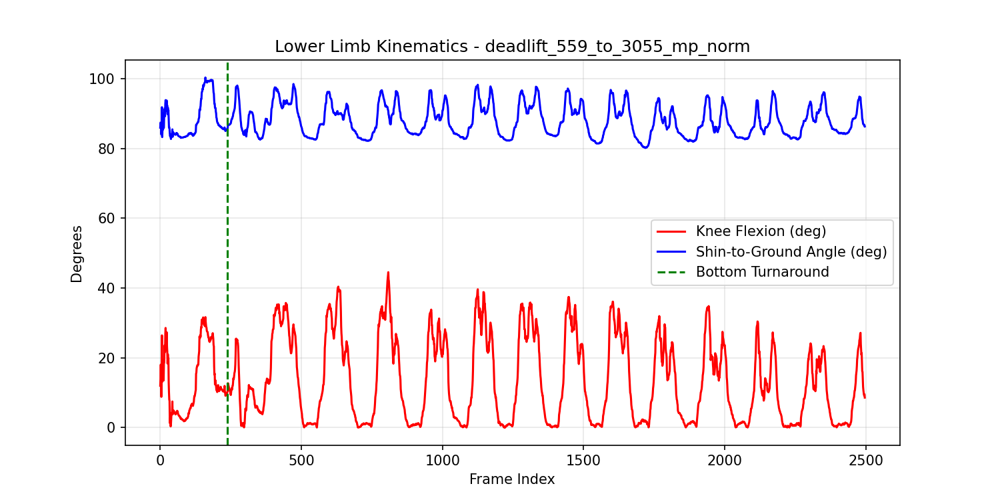
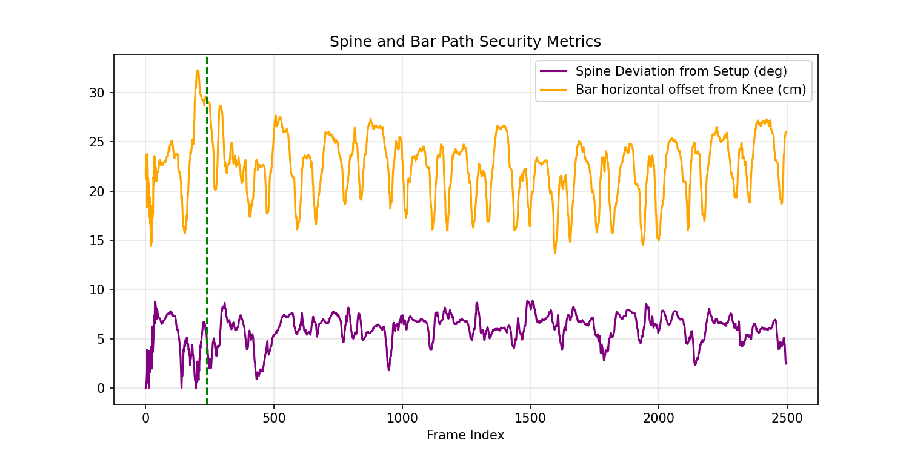

Analysis Target: deadlift_559_to_3055_mp_norm
Execution Date: 2026-05-28 10:05:54
| Evaluated Criterion | Measured Value | Safety Threshold | Status |
|---|---|---|---|
| Knee Flexion (Internal Angle) | 9.9° | RDL: 10° - 15° | Stiff: 0° - 5° | Informative |
| Tibia Angle to Ground Plane | 85.5° | 90° Vertical (±10° Tolerance) | PASS |
| Spine Angular Deviation from Setup | 5.5° | < 5.0° Flexion Extension Change | WARNING: Excessive Lumbar Flexion Risk |
| Bar Path Distance from Tibia | 29.5 cm | ≤ 5.0 cm Horizontal Gap | WARNING: Mechanical Moment Arm Too Large |
| Setup Arm Verticality | -6.7 cm shoulder-wrist horizontal delta | ≤ 5.0 cm absolute offset | REPROVADO: Braco inclinado para tras. Quadril muito alto. |
| Bar Over Midfoot Setup | -18.4 cm wrist-midfoot horizontal error | ≤ 3.0 cm absolute offset | AVISO: Posicione a barra sobre o meio do pe antes de puxar. |
| Initial Pull Synchronism | First 15% of concentric phase | Knee extension rate ≤ 2x hip opening rate | APROVADO: Quadril e joelhos sobem de forma sincronizada no inicio da puxada. |

